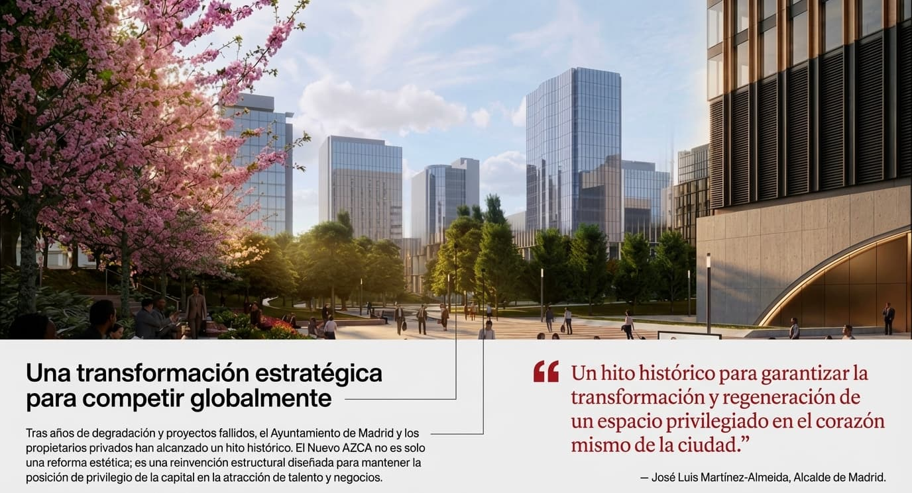

Mutagénesis convergente es la primera novela española solarpunk.
![La imagen muestra una vista aérea renderizada del proyecto urbano “Nuevo AZCA”, una propuesta de renovación del distrito financiero de Madrid. En el centro destaca un gran parque circular, diseñado como pulmón verde, con abundante arbolado, senderos curvos y zonas abiertas que invitan al paseo y al descanso. Este espacio parece pensado para humanizar el entorno, priorizando al peatón frente al tráfico. Alrededor del parque se ven edificios modernos de oficinas, algunos ya existentes y otros integrados en el rediseño, junto con plazas pavimentadas, áreas ajardinadas y recorridos peatonales amplios. También se aprecian zonas con bancos, posibles espacios para eventos y una distribución más ordenada del espacio público. En conjunto, la imagen transmite una transformación del AZCA tradicional —más duro y centrado en lo financiero— hacia un entorno más sostenible, verde y accesible, combinando naturaleza, arquitectura y vida urbana.](images/azca_01.jpg)
Madrid, históricamente definida por la verticalidad del acero y la aridez del asfalto en su distrito financiero, se encuentra ante el umbral de un renacimiento. Tras más de una década de parálisis y planes que naufragaron en la ambición puramente comercial, el proyecto del «Nuevo AZCA» emerge como un manifiesto de regeneración urbana. Este acuerdo es un logro técnico, pero también un giro estratégico crucial: el abandono del antiguo proyecto fracasó ante la oposición de actores clave como Pontegadea (Amancio Ortega). La pregunta ahora es si esta zona, una de las más áridas de Europa, puede transformarse en el estandarte de una ciudad solarpunk donde la tecnología de vanguardia y la naturaleza coexistan en una simbiosis productiva.
![La imagen muestra una visualización del proyecto de renovación de AZCA, planteado como un gran “vergel” urbano en el centro del complejo. Se ve un parque moderno y muy verde, con abundante arbolado y caminos peatonales amplios. En el eje central destaca una ría escalonada, un canal de agua que recorre longitudinalmente el espacio, cruzado por pequeños puentes y rodeado de zonas de descanso. El diseño incluye varios elementos clave: Gran densidad vegetal: se mencionan 1.000 nuevos árboles de unas 40 especies distintas, creando un entorno más natural y sostenible. Graderío al aire libre: integrado en una ladera, pensado para actividades culturales o eventos. Zonas estanciales: áreas para sentarse, relajarse y también espacios de juego infantil. Senderos peatonales: recorridos amplios con personas paseando, que refuerzan la idea de espacio público accesible. En conjunto, la imagen transmite la transformación de AZCA en un espacio más verde, habitable y orientado al ocio, sustituyendo la sensación de distrito financiero duro por un parque urbano contemporáneo.](images/azca_02.jpg)
El núcleo de esta metamorfosis es la creación de un "vergel", un término que el Ayuntamiento utiliza para describir una masa forestal de un millar de árboles de cuarenta especies distintas. Esta biodiversidad no es un mero ornamento, sino una herramienta de diseño sistémico que rompe la monotonía grisácea del entorno.
Desde la perspectiva del urbanismo sostenible, este bosque central responde a una escala humana masiva: impactará directamente en la calidad de vida de los 50.000 trabajadores del distrito, pero también en la de los 2.000 residentes y las 100.000 personas que transitan diariamente por este nodo. La integración de flora autóctona y adaptada busca reconectar el tejido social con el entorno natural en un punto donde antes solo reinaba el hormigón.
"No solo transforma un espacio urbano, sino que propone una nueva manera de mirar la ciudad". — Fernando Ferrero, director de Merlin Properties.
El diseño introduce una ría escalonada que atraviesa el eje central del ámbito, funcionando como la columna vertebral de una estrategia de Passive Cooling (enfriamiento pasivo). En un Madrid cada vez más afectado por veranos extremos, este elemento acuático actúa como un regulador térmico natural, esencial para la atenuación de la isla de calor urbana.
Sin embargo, para un estratega, la belleza del Nuevo AZCA radica en su «infraestructura invisible». El proyecto no solo maquilla la superficie; aborda la resiliencia hídrica mediante una renovación completa del saneamiento. Esto incluye un nuevo sistema de drenaje integral, la reparación de colectores profundos, la impermeabilización de estructuras bajo rasante y la adecuación de los pozos de acometida. Es la ingeniería subterránea la que permite que el ecosistema superficial prospere.
![La imagen muestra otra parte del proyecto de renovación de AZCA, centrada en el nivel subterráneo, con el objetivo de transformarlo en un espacio más luminoso, accesible y agradable.Se representa un amplio pasillo subterráneo renovado, con acabados modernos, iluminación uniforme y personas caminando cómodamente. El elemento más llamativo es una gran abertura circular en el techo, por donde entra luz natural desde la superficie, creando un punto central iluminado que rompe con la sensación tradicional de espacio cerrado. El esquema superior explica el funcionamiento del diseño: Entrada de luz natural: mediante perforaciones estratégicas en la cubierta (los forjados), que permiten que el sol llegue al nivel inferior. Ventilación cruzada: flechas azules y amarillas indican cómo circula el aire entre superficie y subsuelo, mejorando la calidad ambiental. Conexión con zonas verdes: arriba se ve un parque con árboles, lo que refuerza la idea de integrar naturaleza también en el nivel inferior. Además, se destacan dos mejoras clave: Huecos en los forjados: para luz y aire natural. Renovación estética: nueva señalética, mejor iluminación y acabados más claros para facilitar la orientación y el uso. En conjunto, la imagen transmite cómo el proyecto busca convertir los antiguos pasajes subterráneos —antes oscuros y obsoletos— en espacios abiertos, saludables y bien conectados con la superficie.](images/azca_06.jpg)
Uno de los mayores retos de AZCA ha sido siempre su configuración en niveles, que históricamente generó espacios de sombra, inseguridad y aislamiento. El diseño solarpunk propone "bañar los niveles inferiores" de luz y vida. Mediante la apertura estratégica de huecos en los forjados, la luz natural y el aire fresco penetrarán en los 33 pasajes interiores, eliminando la obsolescencia estética y funcional de los túneles actuales.
Esta intervención técnica se desglosa en pilares de eficiencia y seguridad:
El proyecto, firmado por la prestigiosa firma estadounidense Diller Scofidio + Renfro junto a los españoles b720 Fermín Vázquez Arquitectos, busca subvertir la naturaleza de AZCA: de un lugar de «tránsito» a un destino de «permanencia». El anillo central de circulación y las cinco pasarelas peatonales a diferentes alturas no solo optimizan el flujo de personas, sino que crean nuevas perspectivas visuales del bosque.
El tejido social se fortalecerá en las 19 zonas estanciales y el nuevo auditorio al aire libre —un graderío de 150 metros integrado en la ladera— diseñado para albergar desde pausas laborales hasta eventos culturales, convirtiendo el centro financiero en el nuevo corazón comunitario de Tetuán.

Tras la aprobación el pasado 26 de febrero del Proyecto Básico, el reloj ha comenzado a correr. Los próximos cinco meses serán cruciales para la entrega del Proyecto de Ejecución, el último peldaño técnico antes de la licitación. Con el inicio de las obras previsto para el primer semestre de 2027, Madrid se prepara para demostrar que es posible reinventarse para atraer talento y competir globalmente sin sacrificar la habitabilidad.
El Nuevo AZCA es una reforma de una ciudad gris, pero también es una declaración de intenciones. Representa la armonía necesaria entre los rascacielos de la capital y la frescura de un bosque de 1.000 árboles. En un mundo que se calienta, ¿será este vergel el refugio y el modelo de resiliencia que nuestras ciudades necesitan para florecer?
Mutagénesis convergente es la primera novela española solarpunk.